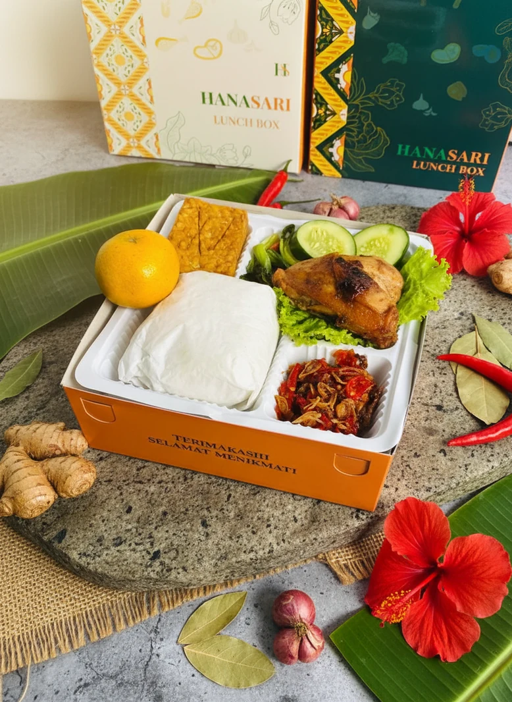
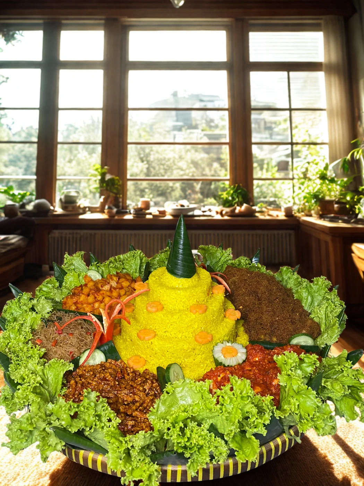
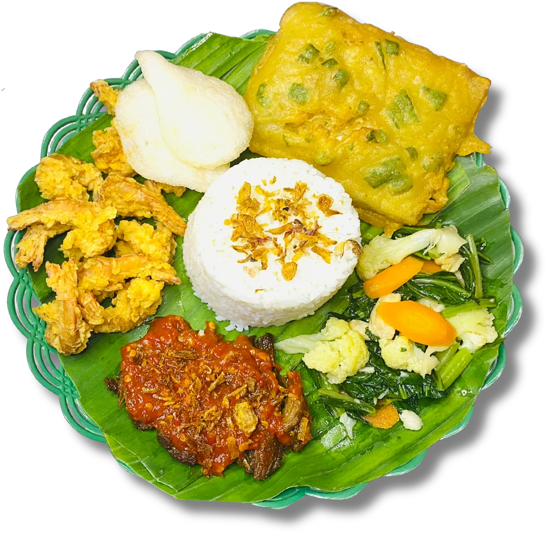

Pilih sajian favorit
Jelajahi pilihan paket atau ceritakan menu yang Anda inginkan.
Hidangan yang akrab di lidah, istimewa di setiap acara. Dari makan siang kantor hingga perayaan keluarga, biarkan Hanasari menyiapkan sajian Anda.


Rapat kantor ✳ Acara keluarga ✳ Syukuran ✳ Momen berbagi
Di Hanasari, kami percaya makanan punya cara sederhana untuk mendekatkan. Seporsi hidangan yang lezat bisa membuat makan siang lebih hangat dan perayaan terasa lebih istimewa.
Itulah semangat kami menghadirkan hidangan Nusantara: cita rasa yang akrab, sajian yang rapi, dan pilihan paket yang mudah dijangkau.
Ragam lauk dan sambal Nusantara untuk melengkapi selera Anda.
Ceritakan kebutuhan acara, lalu diskusikan menu dan pengirimannya bersama kami.
Dari pertanyaan pertama hingga pilihan paket, kami siap membantu.
Jelajahi pilihan paket atau ceritakan menu yang Anda inginkan.
Informasikan tanggal, jumlah porsi, anggaran, dan lokasi acara melalui WhatsApp.
Sepakati rincian pesanan, pembayaran, dan pengiriman bersama admin.
Cuplikan pengalaman pelanggan dari ulasan Google yang dibagikan kepada Hanasari.
Ulasan ditampilkan sebagai kutipan dari tangkapan layar pelanggan.
Kunjungi Google MapsLangsung lewat WhatsApp, temukan kanal Hanasari, atau tanyakan pilihan pemesanan melalui aplikasi favorit Anda.
Isi kebutuhan awal Anda. Kami akan merangkumnya menjadi pesan WhatsApp agar konsultasi lebih mudah.

Selalu ada alasanHanasari menyediakan nasi box, snack box, tumpeng nasi kuning, tumpeng pecel, hampers buah, hampers kue kering, serta sambal botol. Lihat katalog untuk pilihan lauk dan snack, lalu konfirmasikan ketersediaan kepada admin.
Ceritakan kebutuhan dan kisaran anggaran Anda melalui WhatsApp. Admin akan membantu mendiskusikan pilihan paket, lauk, serta penyesuaian yang tersedia.
Minimum pesanan dan waktu persiapan dapat berbeda menurut menu, jumlah, serta tanggal acara. Hubungi admin untuk memastikan sebelum memesan. Katalog mencantumkan minimum 40 pcs khusus roti untuk paket premium.
Belum. Harga dalam katalog belum termasuk pajak dan ongkos kirim. Total biaya, cakupan pengiriman, dan jadwal akan dikonfirmasi berdasarkan rincian pesanan Anda.
Sampaikan alergi dan pantangan sebelum memesan agar admin dapat mengonfirmasi bahan serta proses pengolahannya. Kesesuaian menu perlu disepakati terlebih dahulu.
Katalog Hanasari mencantumkan layanan pemesanan melalui E-Katalog. Silakan hubungi admin untuk tautan produk dan bantuan kebutuhan pengadaan.
Tanyakan E-Katalog ↗Konfirmasi jadwal layanan dan ketersediaan pesanan langsung dengan admin.